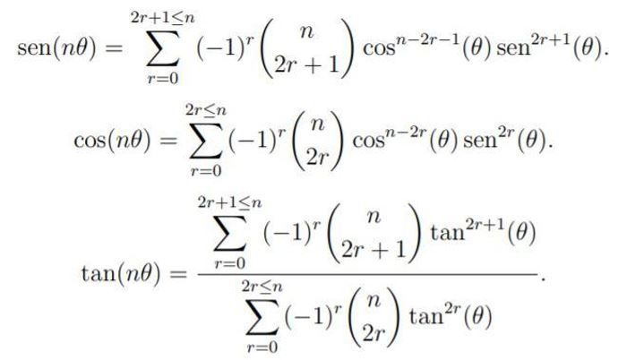
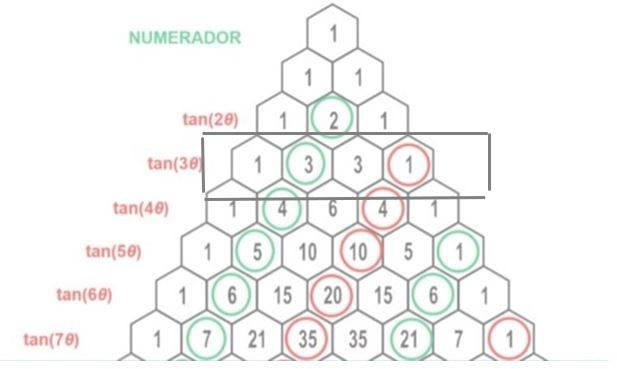
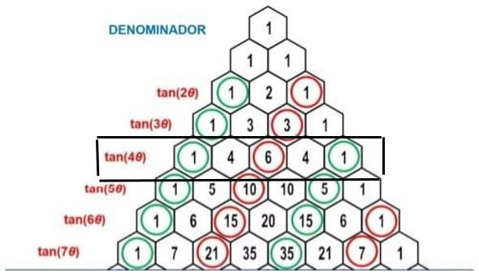

Aplicación del triángulo de pascal para hallar las tangentes de (x) ángulos
Application of pascal’s triangle to find the tangents of (x) angles
Marta Macho-Stadler1*
1* Estudiante de Ingeniería Ambiental,
Universidad Francisco de Paula Santander, Cúcuta, Colombia.
Estudiante de Ingeniería Ambiental,
Universidad Francisco de Paula Santander, Cúcuta, Colombia.
Cómo citar: : Macho-Stadler, M. (2020). “Aplicación del triángulo de pascal para hallar las
tangentes de (x) ángulos”., Covalente, 2 (2), 6-8
©2020. Universidad Francisco de Paula Santander. This is an article under the license
CC BY-NC 4.0

*Autor para correspondencia
Recibido: febrero 18 de 2020
Aceptado: Marzo 9 de 2020
Keywords
Tangent,
Trigonometry,
Mathematics
Abstract
Pascal’s triangle is a representation of binomial coefficients arranged in the form of a triangle.
It is
named after the French philosopher and mathematician Blaise Pascal, who introduced the notation
in 1654, in his treatise on arithmetic and trigonometry. As a result, it can solve complex systems
of
equations in a simple way; it also encourages the application of mathematical sources and techniques
to solve new problems derived from them. In this manuscript, it is proposed as a method to find the
tangents of a proposed angle.
Palabras claves
Tangente,
Trigonometría,
Matemáticas
Resumen
El triángulo de Pascal es una representación de los coeficientes binomiales dispuestos en forma
de triángulo. Lleva el nombre del filósofo y matemático francés Blaise Pascal, quien introdujo la
notación en 1654, en su tratado sobre aritmética y trigonometría. Como resultado, puede resolver
sistemas complejos de ecuaciones de forma sencilla; Asimismo, fomentar la aplicación de fuentes
y técnicas matemáticas para la resolución de nuevos problemas derivados de las mismas. En este
manuscrito, se propone como método para encontrar las tangentes de un ángulo propuesto.
Introducción
El triángulo de pascal creado por el filósofo y
matemático Blaise Pascal, era la representación de
los coeficientes binomiales organizados de forma
triangular, pascal desarrolló muchos métodos
de aplicación y fue el primero en organizar la
información de manera conjunta, además se logró
descubrir que a través de este triángulo podemos
solucionar problemas donde nosotros necesitemos
la tangente (x) Ángulo, facilitando el método de
aplicación y de desarrollo (Zapata et al., 2015).
Identificar métodos y ecuaciones diferentes que
lleven a una solución en común (Bedoya y Polania,
2017). Con lo cual, resolver sistemas de ecuaciones
complejos de manera sencilla; así mismo, incentivar
la aplicación de recursos y técnicas de conocimientos
matemáticos para resolver nuevos problemas
derivadas de las mismas.
Metodología
Muchas de las investigaciones concluyeron que,
con ayuda del triángulo de pascal, se puede hallar
la relación estos ángulos (TanX) para su resolución
(Arteaga et al., 2015), pero no es cien por ciento
perfecta, ya que al momento de usar ángulos grandes
encontramos dificultades como:
- El triángulo de pascal es demasiado grande y
extenso para aplicación de ángulos grandes
- Al momento de usar ángulos mayores de 90º, sus
tangentes son diferentes respecto a la de la fórmula
general.
Fórmula general para hallar las tangentes

Se aprecia que la fórmula cuenta con el seno y
coseno, porque toman las mismas reglas de las
razones trigonométricas (la tangente es seno/coseno)
por tanto, para realizar el cálculo se debe hallar el
seno y coseno de los ángulos que precise el ejercicio.
De aquí, marcha la investigación que al momento
de ser ejecutada, la fórmula se hace muy compleja
para algunas personas, además de ser complicada de
entender o de recordar.
It can be seen that the formula has the sine and
cosine, because they take the same rules of the
trigonometric ratios (the tangent is sine / cosine),
therefore, to perform the calculation, the sine and
cosine of the angles required by the exercise must
be found. Hence, the investigation that at the time of
being executed, the formula becomes very complex
for some people, in addition to being complicated to understand or remember.
Usos del triángulo de pascal para los casos de tangente
Cabe resaltar que el triángulo de pascal no solo
sirve para hallar tangentes, sin embargo, unos de
los objetivos de la investigación es simplificar la
resolución de estos ejercicios, es decir, identificar de
qué manera se puede llegar a la misma respuesta de una
manera limpia y sencilla (Torroba et al., 2017). Siendo
así, la implicación de la fórmula ya presentada, no es
obligatoria para hallar otras razones trigonométricas
como Cos o Sen, pues, en consecuencia, se convierte
compleja la ecuación y también, la resolución de esta.
Se ubica en la fila 4 del triángulo de Pascal. Para
obtener los coeficientes del numerador, comenzamos
por el segundo dígito de la fila (en este caso el
número 3) e ir rescatando los números colocados
en posición par. En la imagen se resalta de color verde, el coeficiente que va acompañado de un signo
positivo y en rojo, aquel que va con signo negativo en
la fórmula. Entre más grande sea el ángulo, los signos
siguen intercalando (positivo, negativo, positivó y
negativo) como si se tratase de una multiplicación de
signos

Ahora se necesita precisar los numero para el
denominador, para ello se realiza el mismo ejercicio,
pero guiándose por la siguiente imagen.

Para obtener los coeficientes del denominador, Se
comienza por el primer dígito 1 de la fila y se rescatan
los números que ocupan los lugares impares en esa
fila. En la imagen se rodea en verde los números que
van acompañados de un signo positivo y de rojo,
aquellos que van con signo negativo en la fórmula,
aplicando el mismo sistema de signos el primero
positivo, negativo, positivó y negativo.
Resultado
A través de este proceso se demuestra que es más
sencillo y rápido hallar la tangente a diferencia de
la fórmula general, ya que, el triángulo de Pascal
expone todos los datos necesarios para la resolución
del mismo.
Conclusión
El triángulo nos facilita hallar algunos ángulos, sin
la necesidad de complicarnos o de confundirnos ya
que, como matemáticos, nosotros debemos hallar
la forma de solucionar problema rápido y de forma
sencilla, llegando a una respuesta exacta y concisa,
implementando saberes previos y acordes al ejercicio,
también siendo un método útil para la enseñanza y
resolución de problemas particulares.
Referencias
- Arteaga, P. M. D. L. C. (2015). Funciones
trigonométricas para ángulos especiales.
Con-Ciencia Boletín Científico de la Escuela
Preparatoria No. 3, 2(4).
- Bedoya Tique, J., & Polania Peña, A. X. (2017).
De la semejanza de triángulos a las Funciones
trigonométricas (Doctoral dissertation,
UNIVERSIDAD SURCOLOMBIANA).
- Expansion of sin(nθ) and cos(nθ), Brilliant. Frank
C. Fung, An Approach to Mathematic Functions
Basics (Section XLIII – Tangent Additions and
the Pascal Triangle)
- Torroba, P. L., Trípoli, M. D. L. M., Devece, E., &
Aquilano, L. (2017). Funciones trigonométricas
y el movimiento armónico simple. In I Congreso
Latinoamericano de Ingeniería (CLADI)
(Paraná, 13 al 15 de septiembre de 2017).
- Zapata, J. H. A., Rojas, Á. M. J., & Martínez, W.
A. Á. (2015). Implicaciones pedagógicas de un
software de geometría dinámica en la percepción
geométrica de las funciones trigonométricas
seno, coseno y tangente. Praxis, 11(1), 30-46.